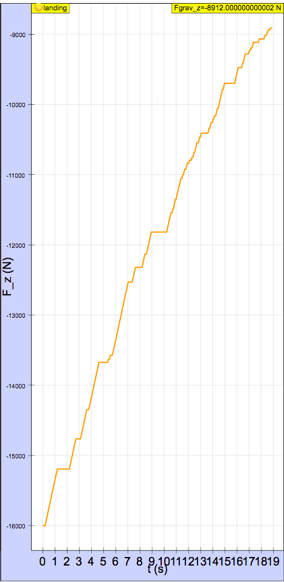
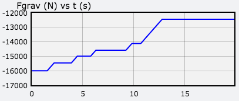
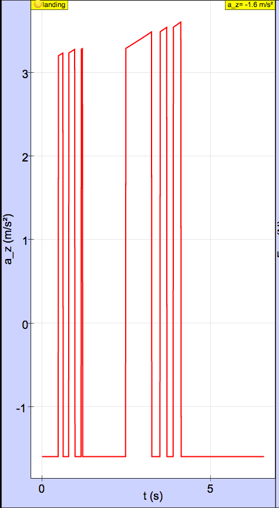
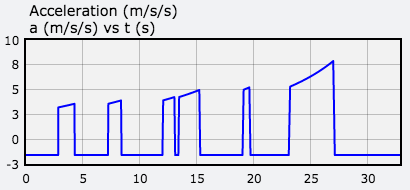
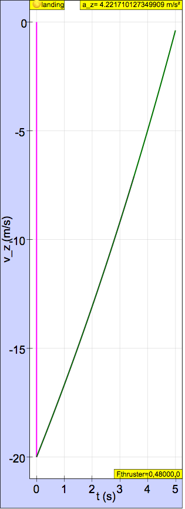
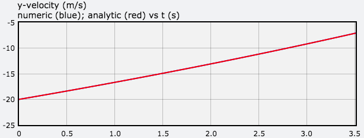

There is no right answer, except having a working program and controlling the lander so it lands within the target and within the safe landing speed.
Students should be encouraged to play with the simulation and add game-like elements to it. Landing within the safe landing speed (less than 1 m/s) is fairly difficult.
In
the code template, there is a function def
process(event) that handles keyboard
interactions. There is a commented line to print the key when it is
pressed, as shown below.
k = event.which
# print(k)If this line is uncommented, then you can type any key and get its associated integer. Choose two other keys, like “a” and “s” for example, and edit this function.
In addition, you will want to add cones (for fire) and arrows for the thrust vectors in the z direction.
It is best to add a graph so you can see how variables such as mass, gravitational force, and acceleration change as thrusters are firing.
As mass decreases due to fuel loss, the denominator decreases less than the numerator decreases. As a result, the fraction increases.
Here is a graph of vs. time. During the flat parts of the graph, the thruster is off. During the upwardly sloped part of the graphs, the vertical thruster is firing and the lander is losing mass.

Here is a graph of vs. time. Each peak corresponds to the vertical thruster firing. It increases as the thruster fires. The flat parts correspond to the engine being off (free-fall). The y-acceleration in free-fall is constant even though the lander loses mass because mass cancels.

The y-velocity of a rocket with constant thrust and constant burn rate in a constant gravitational field is:
where is the exhaust speed of the fuel.
With the given initial conditions, the landing speed of the lander computed numerically is 7.000 m/s or 7.17 m/s (Runge Kutta 4 solver in EJSS) and computed analytically is 7.048 m/s. A graph of y-velocity computed numerically (blue) and analytically (red) is shown below. Because the curves overlap, the numerically determined curve is not seen.

To land with a landing speed less than 1 m/s, the initial y-velocity at a height of 50 m must be -18.88 m/s or -18.86 m/s (Runge Kutta 4 solver in EJSS) .